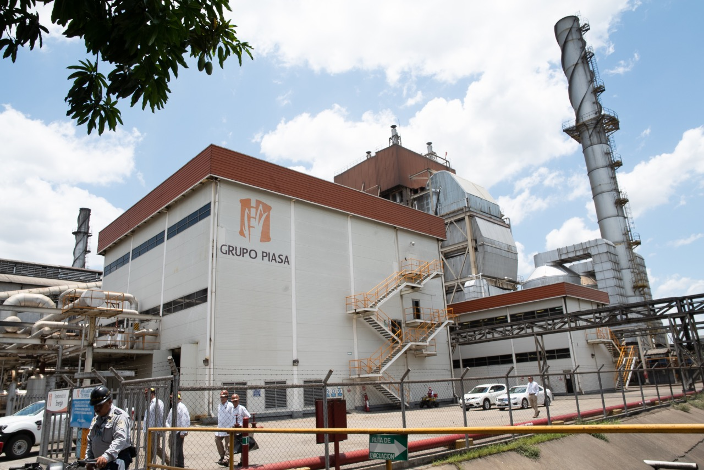
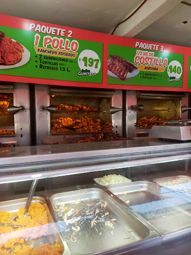
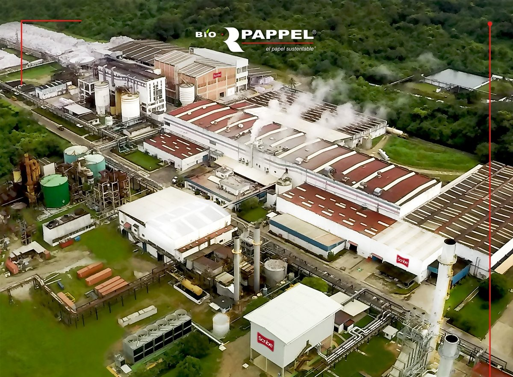
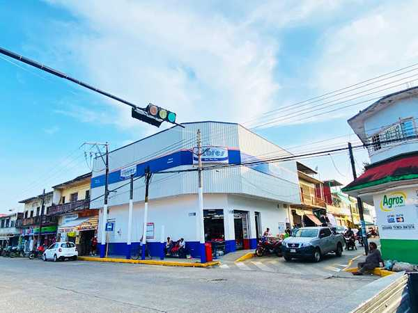
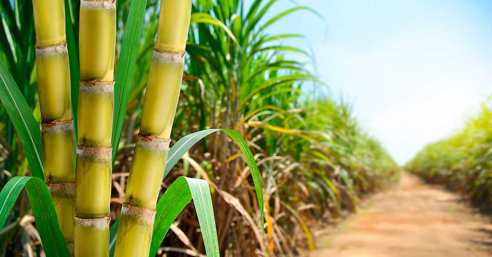
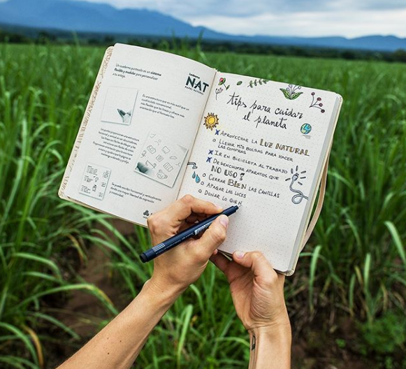

Galería
Respresentación gráfica de la económia de Tres Valles







Tres Valles es una región privilegiada que combina la riqueza de sus tierras agrícolas con el dinamismo de su sector industrial. Nuestra comunidad ha crecido manteniendo un equilibrio perfecto entre tradición y modernidad.
Con un clima favorable y suelos fértiles, hemos desarrollado una agricultura sostenible que alimenta tanto a nuestra población local como a los mercados regionales. Paralelamente, nuestra industria ha evolucionado para ofrecer empleos de calidad y contribuir al desarrollo económico de la región.
En esta página exploraremos la gran actividad económica del día a día de Tres Valles, destacando cómo sus habitantes impulsan el desarrollo a través del trabajo, la innovación y el aprovechamiento de sus recursos naturales.

La tierra fértil de Tres Valles produce alimentos de la más alta calidad
Durante cada zafra, Tres Valles produce aproximadamente entre 1.2 y 1.8 millones de toneladas de caña de azúcar, las cuales son transportadas a el ingenio tres valles para su procesamiento, siendo esta actividad el principal motor económico local.
El cultivo de maíz representa una actividad fundamental para el consumo local, con una producción anual estimada entre 20,000 y 40,000 toneladas, fortaleciendo la seguridad alimentaria de la región.
La producción de piña ha crecido en los últimos años, alcanzando entre 10,000 y 25,000 toneladas anuales, destacando por su calidad y sabor en mercados regionales.
El tipo de piña es el MD2 (piña dulce)
Agroindustria y sostenibilidad impulsando la economía de la Cuenca del Papaloapan
Respresentación gráfica de la económia de Tres Valles




Un recorrido visual por nuestra región
Referencias utilizadas para complementar la información agrícola, económica, visual y audiovisual del proyecto.